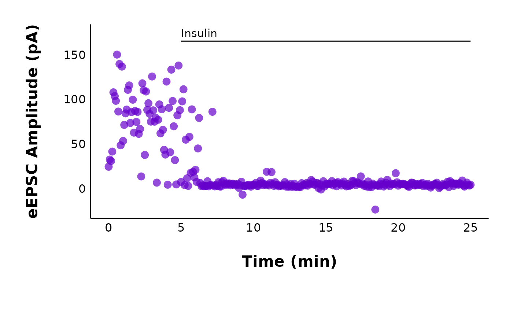

Plotting FAQ
This article contains answers to common questions about plots and
customizing the ggplot output of functions like
plot_raw_current_data(). This is the plot we will use
throughout the FAQ:
cars_plot <- ggplot(cars, aes(x = speed, y = dist)) +
geom_point() +
labs(x = "Speed (mph)", y = "Distance (ft)") +
patchclampplotteR_theme()
cars_plot
How do I save my plots outside of R?
Most plots have an argument called save_png, which you
can set to “yes” or “no” (the default is “no” to cut down on run time).
If save_png is set to “yes”, this will save the plot as a
.png using ggsave() and export it to a folder.
The subfolder will vary depending on the plot type. For example, all
plots generated using plot_PPR_data_one_treatment() will be
exported to “Figures/Evoked-currents/PPR” relative to your project
directory. If you want further control over the export options, you can
also use ggsave() to manually save a ggplot object. ## How
do I change the plot text sizes? A quick fix for making the text bigger
is the large_axis_text argument. Set
large_axis_text to “yes” to add a ggplot theme layer which
increases and adjusts the plot to be ideal for posters or presentations.
If you want more control over the font sizes, you can also apply a new
theme() layer and specify the text elements manually. For
example:
cars_plot +
theme(text = element_text(size = 25, color = "darkmagenta"))How do I change the plot font family?
This can be tricky and it will vary depending on your operating
system. I would recommend using the extrafont package. You
will need to run the code below the first time you do this. Use
fonts() to see the list of fonts available to you in R.
Warning!
font_import()will take a long time to run, especially if you have a lot of fonts on your computer. Luckily, you only need to do this once per system, or after you install a new font.
If you already have the fonts installed in R, you just need to run
library(extrafont) at the start of your document to have
the fonts available to use.
To apply these theme changes globally (i.e. all plots in your file), it will be much more efficient to modify and define a theme. See below!
How to modify the ggplot theme
You might wonder things like, “How can I override the default theme that came with this package?” or “How can I make all my plots have the same theme/fonts, etc.?”. You can fix this effficiently by defining a custom ggplot theme and making it the default theme for a document.
At the top of your Rmarkdown, choose a theme like
theme_classic() or the
patchclampplotteR_theme() that came with this package. Use
this theme as a base, and add new theme elements to replace just the
components you want to change (see the
documentation on theme modification in ggplot2. The new theme that
you define will inherit all components of the base theme, but replace
just the elements that you specified.
Once you are happy with your theme, define it as the default theme
using theme_set().
Now, all of the plots in your document will have your specific theme,
font families, etc. automatically applied. This will overwrite the
default patchclampplotteR_theme() as well.